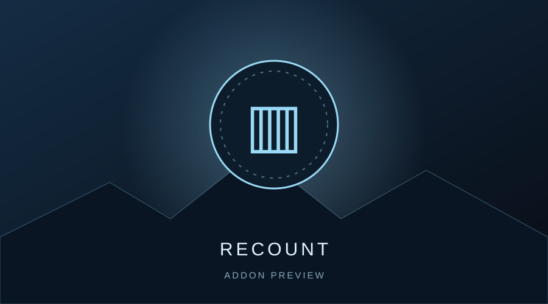
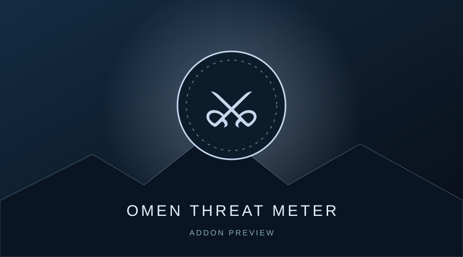

ЗАДЪЛЖИТЕЛНИ
Deadly Boss Mods
Таймери за умения на босовете, предупреждения и сигнали по време на битка. Основен инструмент за ориентация в рейда.
ТЪРСИ В GITHUB ↗Препоръчани интерфейсни инструменти за Wrath of the Lich King 3.3.5a.
2 примерни записа · провери съвместимостта с клиента преди инсталиране
Таймери за умения на босовете, предупреждения и сигнали по време на битка. Основен инструмент за ориентация в рейда.
ТЪРСИ В GITHUB ↗
Статистика за щети, лечение и други бойни показатели за анализ на представянето на рейда.
ТЪРСИ В GITHUB ↗2 примерни записа · провери съвместимостта с клиента преди инсталиране

Следене на threat, което помага на танковете и DPS играчите да избягват нежелано привличане на агро.
ТЪРСИ В GITHUB ↗
Разглеждане на плячката от подземия и рейдове, комплектите и източниците на предмети директно в играта.
ТЪРСИ В GITHUB ↗2 примерни записа · провери съвместимостта с клиента преди инсталиране
Персонализирани визуални и звукови предупреждения. Увери се, че избраната версия поддържа клиента 3.3.5, преди да я инсталираш.
ТЪРСИ В GITHUB ↗Удобства за пощата, като по-бързо събиране на писма и управление на пощенската кутия.
ТЪРСИ В GITHUB ↗